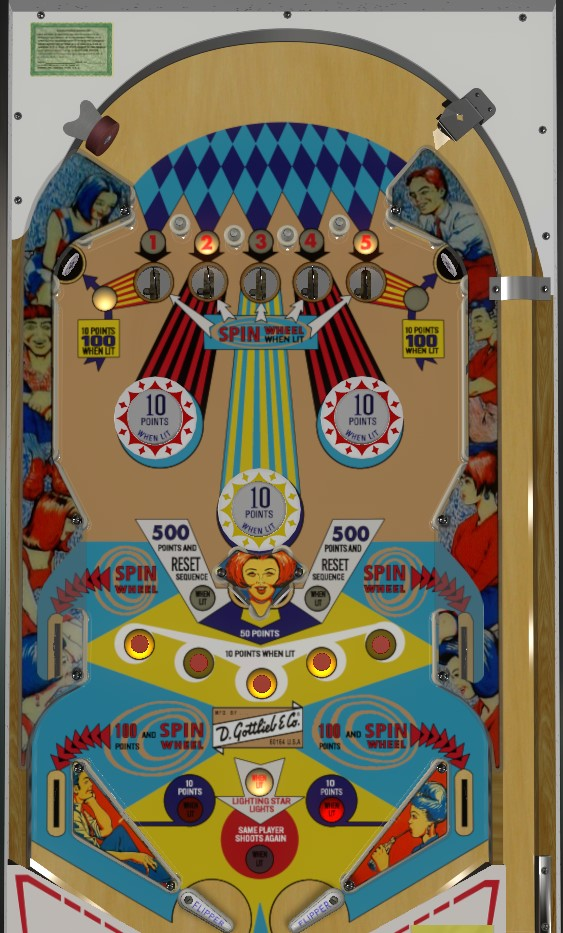

Plunge into any saucer that has either a lit number or a lit saucer itself. Shoot toward the upper half of the table to take advantage of features lit by collecting numbers from the top saucers. Whenever you have a chance to nudge the ball into one of the side lanes labelled Spin, do so. The side lanes can be shot almost-directly as a ricochet off one of the angled center standup targets; this is consistent if you have good aim, but dangerous.
The top saucers each have a number 1-5 that starts lit. Making a saucer with a lit number collects that number. It is frustratingly common for the ball to sneak around a saucer rather than entering it. Each collected numbers lights various playfield features. 1 and 5 light the upper left and right standup targets for 100 points instead of 10; 2 lights the left red bumper and slingshot for 10 points instead of 1; 3 lights the center yellow bumper for 10 points; 4 lights the right red bumper and slingshot. Each collected number also lights one of the rollover buttons near the bottom of the playfield for 10 points instead of 1. Collecting all 5 numbers lights one of the two center standup targets for 500 points and reset sequence; the targets alternate based on 1-point switch hits. When the 500 points is scored and the sequence is reset, all numbers relight at the top saucers, and all bumpers, standup targets, and rollover buttons unlight. In a single player game, it is not very advisable to collect the 500, because the value of the lit features can often exceed that; however, in a multiplayer game, the status of collected 1-5 numbers is preserved across players, so collecting the 500 may mean reducing the number of scoring features available for other players.
There are 5 places to spin the wheel on the backglass: the two side lanes, the two out lanes, and the top saucer whose actual saucer nest is lit. Which top saucer is lit for a spin changes every time a 1-point switch is scored. Anything that awards a spin will cause the backglass wheel to give one of ten "random" awards: five of the awards are 50 points, and the other five are 100, 200, 300, 400, or 500. There is no way to influence the reward you receive as far as I am aware. The 100 points space on the wheel also has a star; if "Lighting Star Lights Same Player Shoots Again" is lit white near the flippers (which also alternates on 1-point switch hits), landing on the 100 points space will also award an extra ball. Max of one extra ball per ball in play.
If the ball is cradled on a flipper, which is not a very common occurrence, you can backhand the ball into the center standup target on the same side as that flipper, and then ricochet should consistently put the ball into the corresponding Spin side lane. If there aren't many features lit in the upper half of the playfield, this can be used to somewhat easily earn a spin, but if you don't hit the target squarely, the ball will be very out of control or quickly center draining.
There are no in lanes. Flippers back up directly to the slingshots. 2 inch mini flippers are used. Slingshots score 1 point, or 10 when lit after collecting the number 2 (left) or 4 (right). Out lanes award a spin.
There is no end of ball bonus or playfield special. Extra ball cannot be set to award points.